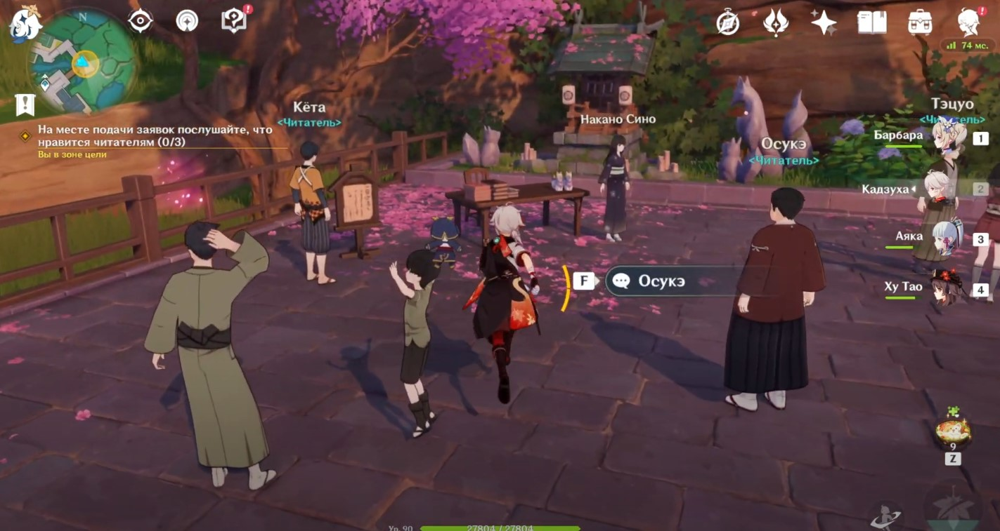
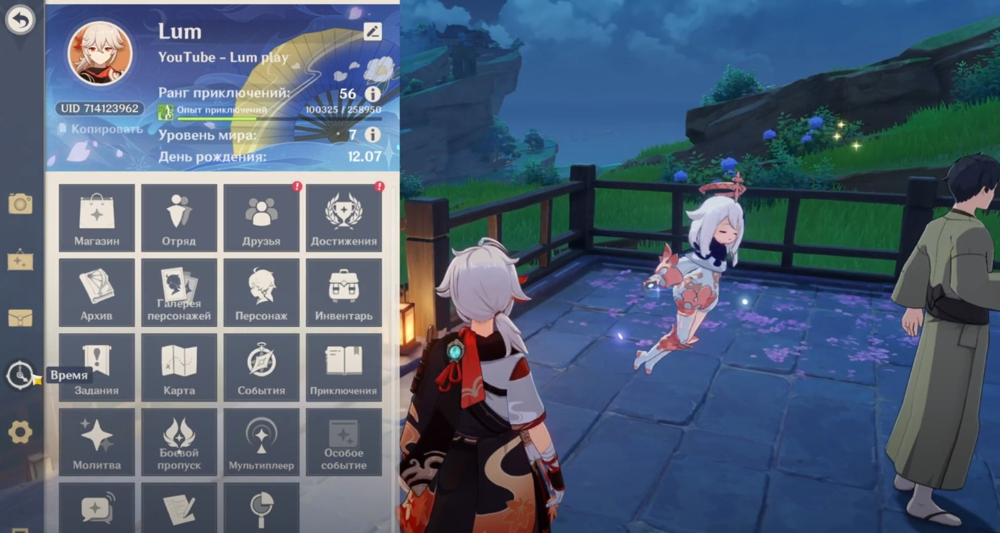
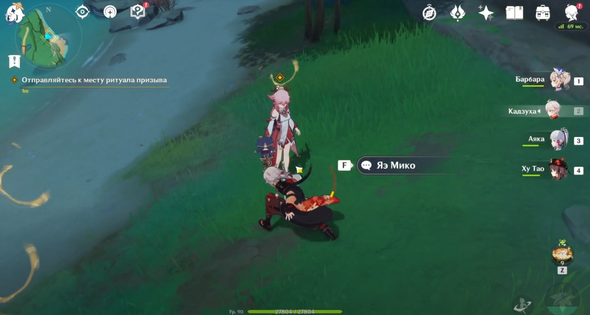
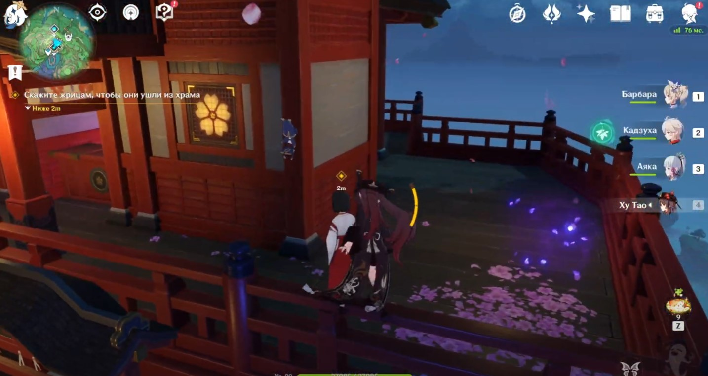
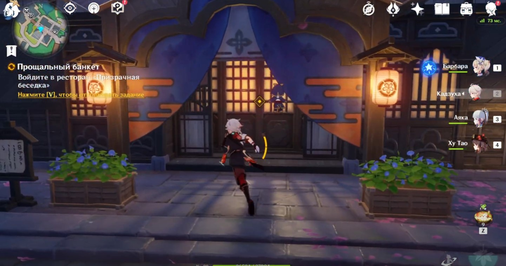

В Genshin Impact Великое подношение Наруками является первой главой задания легенд Яэ Мико «Божественная кицунэ». В ней вы сможете ближе познакомиться с верховной жрицей Инадзумы и помочь ей в решении некоторых проблем.
Чтобы взяться за выполнение этой миссии, вам предстоит вначале открыть ее, разобравшись с рядом требований, а именно:
Достигните, 40-го ранга приключений.
Завершите задание архонтов «Всевидящий бог, бренный мир», относящееся ко 2-му тому сюжетной линии.
Выполните 2-ю главу задания легенд Сегун Райдэн под названием «Мимолетные сны».
Добудьте хотя бы 1 ключ легенд, пройдя 8 ежедневных поручений. Отметим, что в день вы сможете выполнить не больше 4 таких заданий, а держать при себе можно только 3 ключика.
Отправляйтесь в Ханамидзаку, расположенную к западу от города Инадзума. Просто пройдитесь по ней. Гляньте короткую кат-сцену, после которой собственно и начнется первая глава задания легенд.
Вам нужно будет подойти к своим старым знакомым Дзюнкити и Сигэру, которые будут стоять рядом с издательским домом Яэ. Пообщайтесь с этой парочкой. Далее отправляйтесь в Великий храм Наруками и поболтайте с Яэ Мико.
Телепортируйтесь в деревню Конда и пройдите в центр отмеченной области. Посмотрите небольшой ролик. Далее вам нужно будет расспросить местных о том, что они знают про Ехэя и его брата. Персонажи, с которыми вам необходимо переговорить, будут отмечены желтыми маркерами.
Направляйтесь к водопаду, расположенному под горой Его и приблизитесь к Като Синго. Гляньте очередную кат-сцену, в ходе которой появится дух древнего самурая Аракава Кодзи. Вам нужно будет победить его. В действительности этот враг является лишь усиленной версией кайраги, поэтому обладает такими же движениями и атаками. Рекомендуем при сражении с ним держаться его спины, чтобы избежать большинство ударов врага.
Когда у противника останется четверть здоровья, бой завершится. Посмотрите новую кат-сцену. На этом задание завершится. В награду вы получите 425 очков приключений, 31 125 моры, 4 опыта героя и 7 волшебной руды усиления.
Направляйтесь в отмеченную область. Здесь вам нужно будет поговорить с тремя персонажами: Кетой, Осукэ и Тэцуо. Все они находятся на площадке возле святилища. Получив нужную информацию, идите в ресторан «Призрачная беседка» для завершения романа.
Опять идите в издательство и пообщайтесь с Куродой. Вам необходимо передать рукопись на месте подачи заявок. Идите в указанную зону и поговорите с Накано Сино. Теперь вам следует подождать 3 игровых дня. Можете пока заняться другими делами или просто прокрутить время в меню Паймон.
Если вы остались на том же месте, то почти сразу же стартует новая кат-сцена. Вы узнаете, что новелла прекрасно продается. На этом задание завершится. В награду вы получите 525 очков приключений, 38 100 моры, 4 опыта героя и 8 волшебной руды усиления.
Направляйтесь в указанную локацию, расположенную на побережье к востоку от столицы. Вы увидите там Яэ Мико. Поговорите с ней.
Далее войдите в подземелье «Тайный зал призыва», где вы сможете сыграть за жрицу, даже если ее нет в вашей команде
Телепортируйтесь в великий храм Наруками и поговорите с Яэ Мико. Затем сообщите жрицам, что они должны уйти из святилища.
Направляйтесь к главной дороге к западу от горы Его. Как только окажитесь на месте, посмотрите непродолжительный ролик. Разберитесь с волнами противников. Вам придется сразиться с хиличурлами, митачурлами, нобуси и слаймами.
Советуем взять в команду какого-нибудь Анемо героя, способного группировать врагов в одном месте (Кадзуха, Венти, Сахароза), а затем бить их мощными взрывами стихии, наносящими урон по площади. Расправившись с противниками, возвратитесь в храм и попрощайтесь с екаями из артерий земли.
После кат-сцены прокрутите время на следующий день. Отправляйтесь в город Инадзума и войдите в ресторан «Призрачная беседка». Гляньте очередной ролик. На этом первая глава задания легенд Яэ Мико завершится. В награду вы получите 525 очков приключений, 60 камней истока, 38 100 моры, 4 опыта героя, 8 волшебной руды усиления и 5 указаний о «Свете».